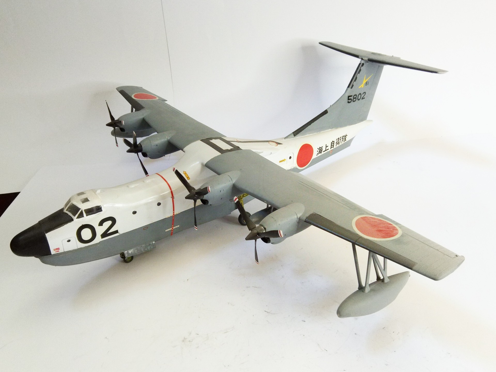
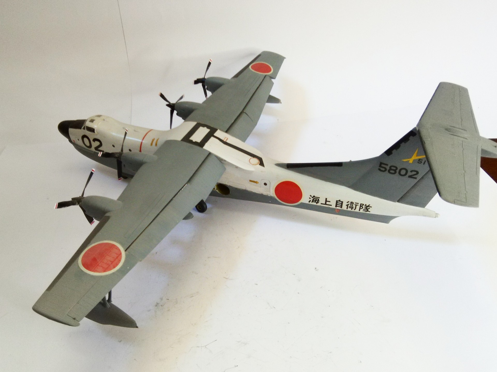

Aerei · scale model archive
Shin Meiwa PS-1
Shin Meiwa PS-1 — Kit: Hasegawa, Scale: 1/72. Nice airplane lines and nice livery #1/72 #Hasegawa

Photo gallery

English description
Nice airplane lines and nice livery
#1/72 #Hasegawa
Descrizione italiana
Livrea Nice airplane lines e nice.